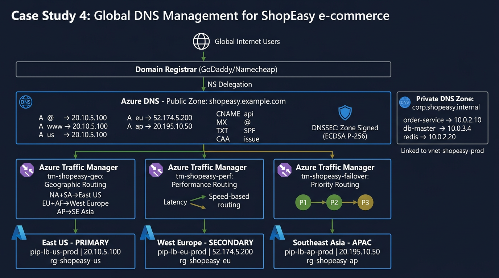

Routes to the endpoint with lowest latency measured in real-time between East US and East US 2.
Azure measures latency from user's recursive resolver to each endpoint.
Priority (Failover)
tm-shopeasy-failover
Priority
Endpoint
P1
East US
P2
East US 2
Automatic failover on health probe failure
Key difference from Case Study 3: Case Study 3 uses a single Priority profile. Case Study 4 demonstrates three different routing strategies for different use cases.
Key Concepts: DNSSEC
DNSSEC (DNS Security Extensions) adds cryptographic signatures to DNS records, preventing attackers from forging DNS responses (DNS spoofing / cache poisoning).
Chain of Trust
1
Root Zone (.) — Signs the DS record for .com
2
.COM Zone — Signs the DS record for shopeasy.example.com
3
shopeasy.example.com — Azure signs with ECDSA P-256 key
4
Resolver validates: Fetch DNSKEY → Verify RRSIG → Match DS in parent → Trusted
DNSSEC Record Types
Record
Purpose
RRSIG
Signature on each record set (proves authenticity)
DNSKEY
Public signing key (published in zone)
DS
Delegation Signer (links child zone to parent)
NSEC/NSEC3
Proves non-existence of a record (prevents enumeration)
Architecture Overview

Multi-Tier DNS Resolution
External Users (Public Zone)
shopeasy.example.com
├── www → 20.10.5.100
├── us → East US LB
├── dr → East US 2 LB
├── api → api-gw.FQDN
└── cdn → azureedge.net
Enable DNSSEC — Zone signing with ECDSA P-256 (03-dnssec/main.bicep)
7
DNS Queries & Failover Test — Verify records, simulate failure, confirm recovery
Run the Lab
# Linux / macOS
./scripts/linux/case-study-4.sh
# Windows (PowerShell)
.\scripts\windows\case-study-4.ps1
Failover Test: CLI Commands
Linux / macOS (Azure CLI)
# Get Traffic Manager FQDN
TM_FQDN=$(az network traffic-manager profile show \
--resource-group rg-shopeasy-dns \
--name tm-shopeasy-failover \
--query dnsConfig.fqdn -o tsv)
# Before failover — should return East US IP
nslookup $TM_FQDN
# Simulate outage: disable East US endpoint
az network traffic-manager endpoint update \
--resource-group rg-shopeasy-dns \
--profile-name tm-shopeasy-failover \
--name primary-east-us \
--type azureEndpoints \
--endpoint-status Disabled
# Wait ~60s then verify — should return East US 2 IP
sleep 60 && nslookup $TM_FQDN
# Re-enable (failback)
az network traffic-manager endpoint update \
--resource-group rg-shopeasy-dns \
--profile-name tm-shopeasy-failover \
--name primary-east-us \
--type azureEndpoints \
--endpoint-status Enabled
DNSSEC Verification
Check RRSIG Records
# Query with DNSSEC (using dig)
dig +dnssec shopeasy.example.com A
# Look for:
# flags: ... ad; ← "Authenticated Data" flag
# RRSIG A 13 ... ← ECDSA P-256 signature
After Enabling DNSSEC
Critical step: You must add the DS record to your domain registrar. Without this, the chain of trust is broken and DNSSEC validation will fail for resolvers that check.
Key Rotation
Key Type
Abbreviation
Rotation
Key Signing Key
KSK
Yearly (update DS at registrar)
Zone Signing Key
ZSK
Monthly (automatic)
Key Takeaways
DNS Management
Public zones: Internet-facing with full record support